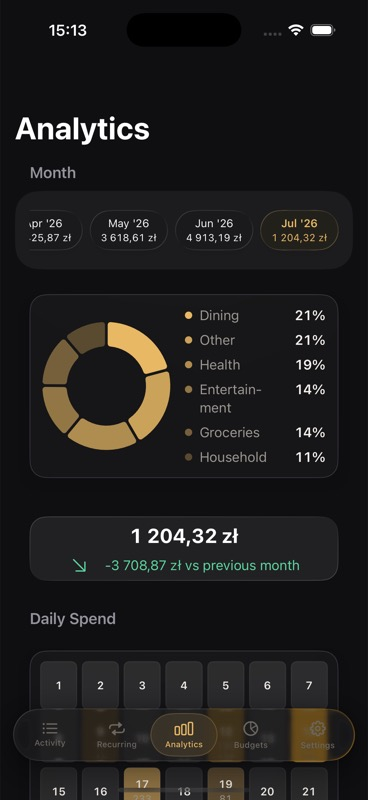
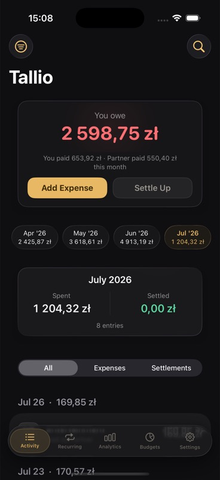
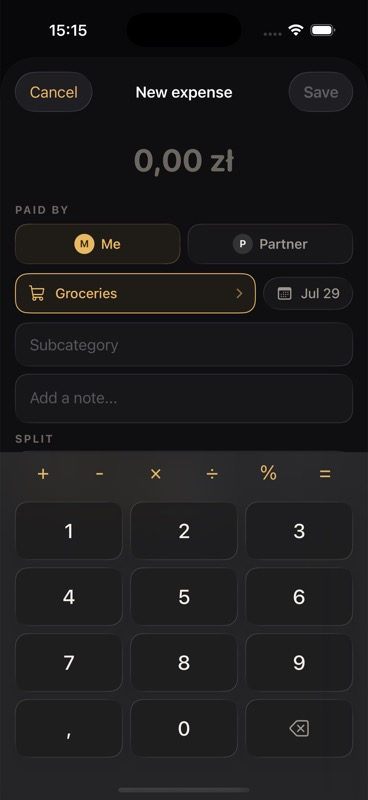
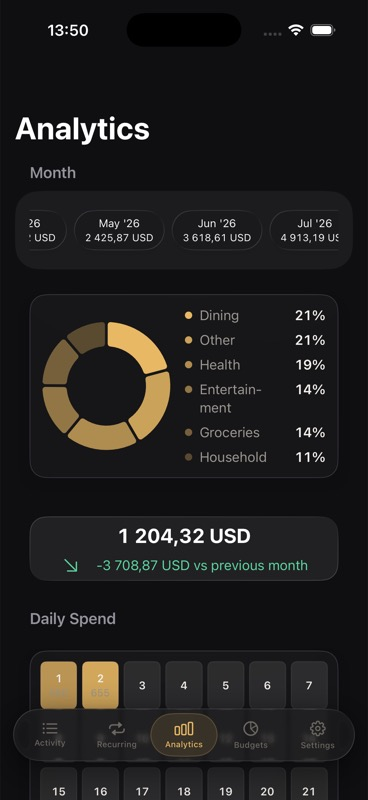
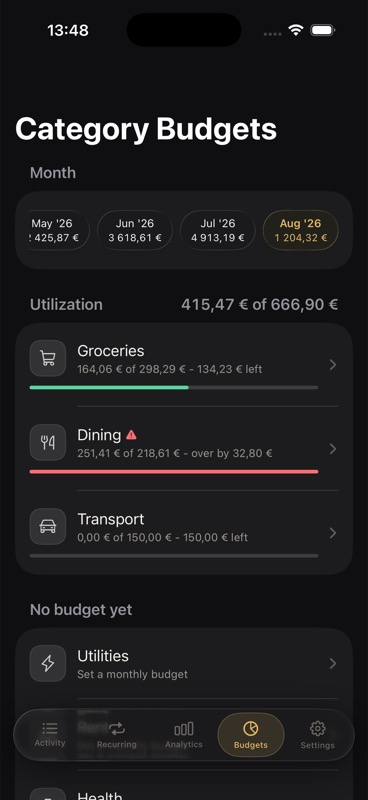
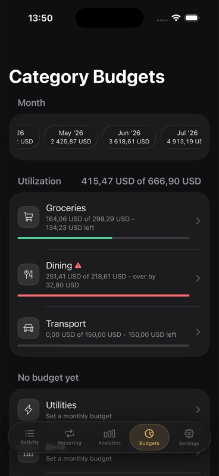
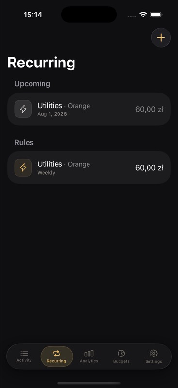
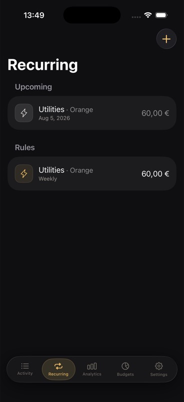

01↗
What it containsExpensesSettlementsSearch
Activity — the household ledger
Every expense and settlement in one timeline. Each entry keeps who paid, the split, category, date, and the balance it changes.
See the full story behind the number.Tallio gives two people one calm, private place for expenses, settlements, budgets, recurring bills, and the balance between them.


Built for households that want clarity, not accounting homework.
This is the app map: Activity and Add Expense handle the everyday ledger; Recurring and Budgets help you plan; Analytics and Settings help you understand and control the household.
Every expense and settlement in one timeline. Each entry keeps who paid, the split, category, date, and the balance it changes.
See the full story behind the number.Enter the amount, payer, category, date, note, and split. The keypad handles calculations and percentage splits when the default needs an exception.
Fast entry without losing the context.Create repeating expenses and settlements, review what is coming up, add an item early, skip it, or pause the rule.
Plan bills before they land.Set monthly category limits and see what is spent, what remains, and where the household has gone over.
Notice drift before it becomes a surprise.Explore category shares, month-to-month change, daily spending, trends, and the individual entries behind each total.
Turn totals into a story you can act on.Choose the household currency, default category, split, names, language, and partner invitation. Data stays scoped to the household.
Set the rules once; both phones follow them.Every expense records who paid and how it should be split. Tallio turns those entries into a live balance, then keeps settlements separate so your spending picture stays honest.

Move from the monthly picture to the next bill or the category that needs attention—whether your shared ledger is in PLN, EUR, or USD.







The owner creates the ledger. The partner joins that exact household through a one-time invitation. Production access belongs to one user and one shared household. A second person joins only that same household through its invitation.
Enter your name, choose your household currency, and set the split Tallio should prefill for new expenses.
Send the one-time household invitation from Tallio. It grants access to this household—not to any other Tallio data.
For the cleanest partner setup, install Tallio but accept the household link before opening the app independently.
Your partner adds their own name and language preference. Both phones then work with the same shared ledger.
These are the shortcuts that make the ledger feel lighter after the first week.
Choose a default category and split in Settings. Most expenses then need only an amount and a quick confirmation.
Use Settle Up when money actually changes hands. Settlements adjust the balance without distorting category spending.
Recurring rules show their next occurrence. Add it now, skip it, or change the rule before it reaches the ledger.
Filter by month, expense type, or category, and search descriptions when you need to reconstruct an old purchase.
Check the balance, see top categories, or start an expense for a chosen category without navigating through the app.
Pro can create a CSV copy of the full ledger for archiving, spreadsheets, or a household finance review.
No subscription. One household member purchases Pro and the shared household unlocks advanced tools for both partners.
Tallio uses private and shared iCloud databases. There is no public household directory and no public Tallio database for unrelated users to browse.
Read the current privacy policyA partner sees a household only after accepting its specific one-time invitation with the intended iCloud account.
Names, language preference, expenses, settlements, categories, budgets, and rules are shared only inside the joined household.
Local data uses iOS file protection, and optional App Lock can require Face ID, Touch ID, or the device passcode.
Pro exports the ledger to CSV when you request it. Export is deliberate—not a background analytics feed.
No. Production access is for one user and one shared household. A second person can join only that same household after accepting its invitation; unrelated household data is not visible.
Yes. An accepted household participant has read-and-write access to the shared ledger, including expenses, settlements, categories, budgets, and recurring rules.
Tallio changes the household currency label for future use. It never converts or rescales historical amounts automatically.
No. Pro is designed as a one-time purchase. One household member unlocks it and the partner receives the shared household entitlement too.
iPhone is the starting version; iPad support will be added soon. The domain and App Store download link will be added as Tallio moves beyond private beta.
Back to the top